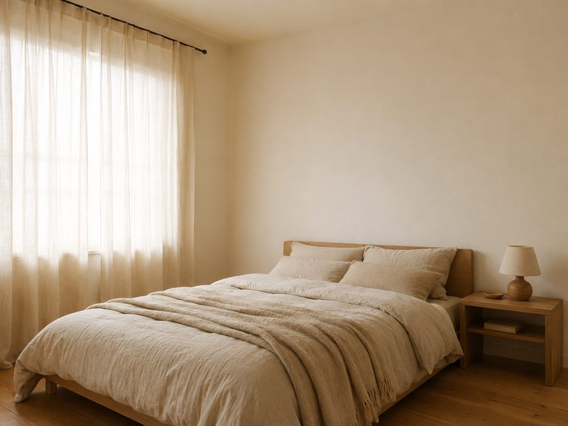
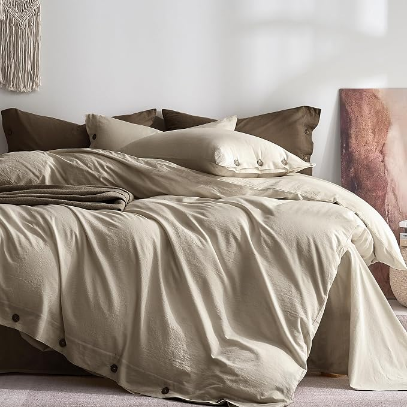

Your Sheets Can Make a Light Duvet Feel Too Hot
The duvet gets blamed when a bed feels too warm, but the first layer against your skin can have a bigger effect on how the bed feels. A lighter duvet may make less difference if the sheets still keep warmth and moisture close to your body.
The short version
- Start with the sheet fabric, because it is the layer touching your skin all night.
- If you wake hot, changing only the duvet may leave the sheet layer unchanged.
- For a lighter-feeling sheet, compare breathable fabrics around 150 gsm or less.
- Warm oatmeal can work naturally with warm walls and timber tones.
As an Amazon Associate I earn from qualifying purchases. Links below are affiliate links (#ad) - they cost you nothing extra. Nothing here is a paid placement, and no brand sees this page before it goes up.
The sheet is the layer you actually sleep against
A duvet sits above the sheet, but the sheet is the surface your skin meets for hours. If that layer holds moisture and heat rather than allowing them to move away, switching to a lighter duvet may not transform the bed; you have changed the layer above the issue rather than the layer against your skin.
Fibre choice therefore deserves attention before duvet weight. Linen and bamboo are useful directions when the aim is a less clammy feel, while standard cotton can feel different depending on how it is made. For a simple shopping rule, compare lightweight sheets around 150 gsm or less if you want a lighter-feeling layer, then check the fibre and construction rather than treating gsm as a temperature guarantee.
Thread count is less useful as a shortcut for coolness. A very dense sheet can feel heavier and less airy even when the advertised thread count sounds impressive. If you regularly wake hot, prioritise breathable construction and a fabric weight of roughly 150 gsm or below before paying extra for a high thread-count finish.

Warm neutrals make the bed easier to live with
Pure white is visually crisp, but it gives every mark a high-contrast stage and can look less forgiving after repeated washing. A warm oatmeal shade does the opposite: it works with warm walls and timber tones without making the bed look like a separate white rectangle.
The existing room matters more than a trend. If the walls are warm, compare the bedding against them in daylight before deciding; if the room is already cool-toned, oatmeal may still work, but it will introduce a warmer visual note rather than disappear into the background.
A practical colour check takes less than 5 minutes: place the duvet cover or sheet beside the wall and look at it in both daylight and your usual evening light. If the bedding looks noticeably pink, yellow or grey against the room rather than softly related to it, choose another shade before buying the full set.
Check the layer before replacing the whole bed
Check the fabric before the duvet weight. If the sheet is the layer against your skin, changing that layer is a logical first test; give the new bedding at least 3 nights before deciding whether the duvet itself needs replacing.
Check the fabric weight before buying. For a lighter-feeling sheet, use 150 gsm or less as a practical starting threshold. It does not determine temperature by itself, but it gives you a concrete way to narrow down lightweight options instead of relying on vague claims such as “cooling” or “summer weight.”
Check the care instructions before buying. Bedding that needs a washing routine you will not follow is a poor practical choice; look for instructions that fit the way you already wash and dry sheets, especially if the bed is changed every 7 days.
Check the colour against the room in daylight. Hold the bedding beside the wall and other large surfaces rather than judging it under a bedside lamp; oatmeal will read warmer than pure white, which can make a warm room feel more visually joined-up.
What we would actually buy
 Our illustration of the look - not the product photo
Our illustration of the look - not the product photoBamboo sheet set
A bamboo sheet set addresses the article's main problem by changing the layer directly against your skin rather than relying on a lighter duvet. For a lighter-feeling option, compare sets around 150 gsm or less, then check the care instructions and make sure the set suits how often you wash and dry your bedding. It may not suit someone who specifically wants a different fibre or whose care routine does not match its instructions.
Best for: For sleepers prioritising a lighter-feeling sheet layer
See it on Cariloha →paid link
Washed cotton duvet cover, oatmeal
The washed cotton duvet cover in oatmeal helps with the visual problem shown in the photographs: instead of a bright white bed sitting apart from a warm wall, the bed takes on a softer, warmer tone. Before buying, check the care instructions and compare the oatmeal shade with your wall in daylight. It may not suit someone who wants the sharp, high-contrast look of pure white bedding.
Best for: For warm rooms where the bed feels visually disconnected
See it on Amazon →paid linkIf you only do one thing
Change the sheet layer first, because that is what your skin actually touches, and give the room's existing colours a daylight check before replacing anything else. For a concrete starting point, compare breathable sheets at 150 gsm or less, use them for at least 3 nights, and reassess before spending money on a new duvet.
How we choose
We look for pieces that change how a small room works, not the cheapest option and not the most photographed one. Everything here has to survive a rental: no drilling, no permanent fittings, nothing that needs a second person to install.
Room images on this site are our own illustrations, not photographs of the products. We link to the retailer so you can see the real item.
Written and selected by Rooms and Roads · Updated August 2026 · links checked August 2026